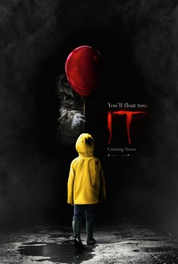

IT Capitulo 1 |
||
|---|---|---|
|  | Sinopsis: Cuando empiezan a desaparecer niños en el pueblo de Derry (Maine), un pandilla de amigos lidia con sus mayores miedos al enfrentarse a un malvado payaso llamado Pennywise, cuya historia de asesinatos y violencia data de siglos. Adaptación cinematográfica de la conocida novela de Stephen King "It". |
Director:Andy Muschietti Reparto:Bill Skarsgård, Jaeden Martell, Sophia Lillis Año: 2017 Duracion:135 min Pais:Estados Unidos |
Criticas Profesionales:Nando SalváAventura juvenil excitante y conmovedora que no solo da miedo sino que resulta genuinamente perturbadora (...) captura con asombrosa precisión la combinación de arrogancia, ternura e inocencia propia de la adolescencia |
Trailer |
Obtener:AlquilarComprar |
Registrate/Iniciar Sesion